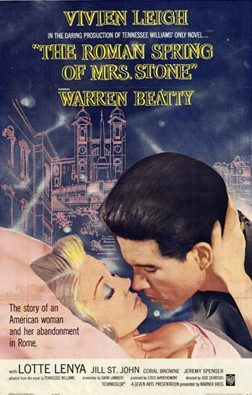

The Roman Spring of Mrs. Stone
Starring: Vivien Leigh, Warren Beatty, Lotte Lenya
Director: José Quintero
Writer: Gavin Lambert
Producer: Louis de Rochemont
The Roman Spring of Mrs. Stone is a 1961 romantic drama film directed by José Quintero from a screenplay by Gavin Lambert and Jan Read, and starring Vivien Leigh, Warren Beatty and Lotte Lenya. It is an adaptation of the 1950 novel by Tennessee Williams, about a middle-aged actress (Leigh) who starts an affair with a younger male gigolo (Beatty) after her husband's death.
Trivia
- Nominated for: Academy Award for Best Supporting Actress.
- Williams had approval over director and screenwriter; he had worked with Quintero several times in the theatre and admired Gavin Lambert's The Slide Area.
- The first actor offered the part of the countess was Elisabeth Bergner who turned it down.
- According to Quintero, "Warren was never popular with the crew.
Filming Locations
- The film was going to be entirely shot in Italy, with Quintero conducting several weeks of location and pre-production in Rome.
- A number of scenes set outside were rewritten to be set inside where they could be filmed in England.
- Permission was eventually granted for three weeks of exterior location shooting in Rome.
Previous Showings
1 Run • 0 Festivals
All runs on record (1):
- December 17 - 20, 1994w/ A Streetcar Named Desire